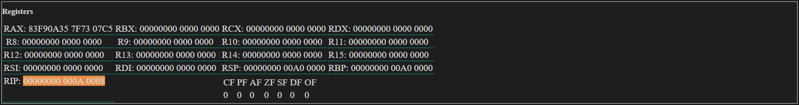

- Introduction
- Limitations And Bugs
- Code View
- Registers View
- Memory View
- Output View
- Variables View
- Messages And Screenshots View
- Operators
- Keywords
- Implemented Instructions
- Instructions Not Implmeneted Yet
- Interrupts
- Implemented External APIS (Win APIs)
- Helpfull links
Introduction:
Hello and welcome to my (Tyler Grusendorf) online x64 emulator written in TypeScript (JavaScript)! This emulator is still a work in progress so there might be a few bugs here and there.
Understanding computers and how they work is really a passion peice over hobby and if you really want to nerd out check out CPUville and Donn's Homemade computer! I've worked to sqush them all but, you know. Regardless there are currently Implemented Instructions.
As this is an emulator most Interrupts and Win APIs aren't implemented yet.
Take a look at the different sections for descriptions on each section in the emulator.
My biggest todos right now are making descriptions for each of the implemented instructions and to make up a tutorial to show how assembly works.
Lesson 01: Assembly Language... are you a masochist? lol
To load pre-built examples:
In the Code editor pane select an example from the drop down list and click "Load"
Next click "Compile"
Finally click "Execute Next" to run one example at a time OR "Run" to run through all instructions.
Once the end of the program is reached click "Compile" again to reset or select a new example.
Limitations and Bugs:
Lets start off on the wrong foot! Bugs, Limitations & Problems!-
Currently the Emulator can only handle 32 bit numbers. It's a limitation of JavaScript as though JavaScript stores numbers as 64 bit floats it can only store integers in 52 bits and finally JavaScript bitwise operations can only handle 32 bit numbers. It's on my TODO list to work around.
Woot! We're 64-bit capable now. Added Long.js module to handle 64-bit ints. Added R8-R15 registers.
I had to modify some of the module code and make it TypeScript compatible. It added some complexity which means some slow down but for the small purposes of the emulator and how slow it is already I think its fine. - Operands on instructions don't check for the correct number during compile. So if you have only one operand on, say, MOV the compiler doesn't care. But when running the program will die.
- The emulator doesn't care about Memory, Memory operations. In the real world you can't call a "MOV mem, mem" as the processor can't handle memory to memory operations. My emulator will accept this as valid. Don't get into the habit of using this!
- Instructions aren't stored in the virtual RAM. so you can't directly access, modify, or jump to code addresses at runtime. (Not that you should)
- Not 100% certain all Instructions below are working esp. when it comes to assigning flags. I thing they are but I make no promises at this point.
- Virtually no error handing. When an instruction isn't understood correctly the interpreter keeps going so ususally its at the end of stream that an error is thrown.
- Like assembers be wary of assuming data sizes. Use BYTE, WORD, DWORD keywords for accessing memory locations or you might get weired results!
- Floating point registers aren't implmented yet.
- Find something else? Let me know!
Code View:

- Ace code Editor for syntax highlighting
- Highlights next instruction to be executed.
- Clicking on the gutter will insert a breakpoint and the program will pause when it reaches that line.
- During compile if a syntax error occurs the emulator will attempt to highlight the offending line.
Registers:

- Shows the values in the registers.
- Highlights the register that was modified by the last instruction.
-
Double clicking on the register value (Except RIP) will allow you to modify the register value.
Editing registers is divided into 3 parts. The Top 32 bits. The mid 16 bits (top half of E) and the lower 16 bits (X).
Input values must be in Hex (0-9 A-F) and case doesn't matter. - double clicking on a flag value allows it to be changed as well. Only accepts 1 or 0.
A: General Purpose Register
B: General Purpose Register
C: General Purpose Register
D: General Purpose Register
SI: General Purpose Register
DI: General Purpose Register
R8: General Purpose Register
R9: General Purpose Register
R10: General Purpose Register
R11: General Purpose Register
R12: General Purpose Register
R13: General Purpose Register
R14: General Purpose Register
R15: General Purpose Register
BP: Stack Base Pointer. Stack pointer grows towards 0 from here. Should always use 32 bit reference EBP whan using.
SP: Stack Pointer. Should always use 32 bit reference ESP whan using.
; IP: Points to the next instruction to be executed. Shouldn't be changed manually in code! (ie don't use "mov EIP, 0x10") Use the flow control instructions. (like JMP mylabel)
All Registers can be accessed at different sizes:
For instance usinging the "A" register the full 32 bits would be accessed using EAX
AX is used for accessing the lower 16 bits
AL for the lower byte (8 bits)
And finally AH for acessing the higher 8 bits of the lower 16 bits
As an example if we have the following hex number in the D register: 0x12345678
EDX would return the whole number (0x12345678)
DX would return 0x5678
DH would return 0x56
DL would return 0x78
For the extended R registers you can access lower bits using the following:
R8 - The full 64-bit register.
R8D - D for Double Word (Lower 32-bits)
R8W - W for Word (Lower 16-bits)
R8B - B for byte (Lowest 8-bits)
Notice the only difference between the older registers and the newer R registers is there is no H option to get the lowest high byte (Like AH)
Segment registers DS, ES, FS, GS, SS are not used.
Flags
| CF: | Operation generated a carry or borrow | |
| PF: | Last byte has even number of 1's, else 0 | |
| AF: | Denotes Binary Coded Decimal in-byte carry | |
| ZF: | Result was 0 | |
| SF: | Most significant bit of result is 1 | |
| DF: | Direction string instructions operate (increment or decrement) | |
| OF: | Overflow on signed operation | |
| AC: | Alignment check(486SX + only) | |
| ID: | Changeability denotes presence of CPUID instruction | |
| These flags exist but aren't used for anything (and aren't shown): | ||
| TF: | Trap flag(single step) | |
| IF: | Interrupt enable flag | |
| NT: | Nested task flag(286 + only), always 1 on 8086 and 186 | |
| RF: | Resume flag(386 + only) | |
| VM: | Virtual 8086 mode flag(386 + only) | |
| VIF: | Virtual interrupt flag(Pentium +) | |
| VIP: | Virtual interrupt pending(Pentium +) | |
Memory View:

- Shows the values in memory
- Can jump to different areas in memory.
- Hightlights memory that was read by last instruction.
- Highlights memory that was modified by last instruction.
- Double clicking a cell will allow that byte in memory to be modified.
- Declared variables in the .data section will start at address 0x10 (16) and will grow towards the end of memory
- Instructions are stored at 0xA0000. Currently this is a lie and instructions aren't stored in emulator memory
- Memory is hardcoded to be 0xA00000 bytes long. (10 Mebibytes... ugh Megabytes)
- The stack starts at 0xA00000 and grows towards 0. The stack can trample other memory if it grows too large.
Output View:
- When using int 0x21 the output window will appear. This allows for interrupts to emulate dos functions and read chars and write to the screen as though it were a console application.
- Attempts to make look like a classic DOS screen.
- When using int 0x4C with a value in AH of 0x1 or 0x7 or 0x8 the output view must be in focus (clicked on) for the emulator to receive input.
Variables View:
- Lists the variable name, size, and memory location.
- TODO: Jump to and highlight memory on double click.
Messages and Screenshots:
- int 0x05 - Will save a screenshot of the output view here.
Operators:
| + | Adds two values |
| - | Subtracts right from left |
| * | Multiplies |
| / | Divides (Integer Division) |
| MOD | Remainder of Integer Division |
| EQ | Equality chack |
| NE | Not Equal to |
| GT | Greater than |
| LT | Less than |
| GE | Greater than or equal to |
| LE | Less than or equal to |
| AND | Bitwise AND |
| OR | Bitwise OR |
| XOR | Bitwise XOR |
| NOT | Bitwise NOT |
| SHL | Bitwise Shift bits left |
| SHR | Bitwise Shift bits right |
| LENGTH |
Gets the length (in bytes) of the defined variable. Eg. .data msg db 'Hello $' ; 7 Letters long .code mov eax, LENGTH msg ; Puts 7 into EAX |
| [ and ] | Used to get the contents at calcualted memory address of the operation within the parenthesis. |
Keywords:
| .CODE | Tells the compiler the next section is code. REQUIRED |
| .DATA | Tells the compiler the next section is data. |
| BYTE | Tells the next instruction the value is byte sized. |
| WORD | Tells the next instruction the value is 2 bytes (Short). |
| DWORD | Tells the next instruction the value is 4 bytes (An Int). |
| DB | Used in .data to declare variable size of byte. |
| DW | Used in .data to declare variable size of word (Short). 2-bytes |
| DD | Used in .data to declare variable size of dword (Int). 4-bytes |
| DQ | Used in .data to declare variable size of qword (long) (8 bytes). |
| DUP |
Used in .data to duplicate data during declaration. What that means is lets say we have: data db 0, 0, 0, 0 We can declare this using the dup command: data db 4 DUP (0) Which tells the compiler to put 0 valued byte into the data variable 4 times. This is really useful when you have a large buffer for instance: buffer db 80 DUP (0) Will tell the compiler to fill the buffer variable with 80 bytes of zero. Format: <Variable Name> <Data Size (DB, DW, D, or DQ)> <Num of times to duplicate> DUP (<Value>) <Value> can be any value that fits into the data size. As well at multipule values comma seperated: data db 4 DUP (0, 1) Is the same as: data db 0, 1, 0, 1, 0, 1, 0, 1 |
| END | End program. |
| EXTRN | Points to an external function that should be included. See External Functions |
Instructions:
Most instructions have two parameters (operands) Target and Source.
When an operation is performed the source and target are read and the operation does what it needs to before placing the result in the Target overwriting what was there. Source remains unchanged.
A good example would be this:
MOV ax, 4 ; Move 4 into ax
MOV bx, 3 ; Move 3 into bx
ADD ax, bx ; Read 3 from bx and read 4 from ax. Add the two numbers together and place in ax (result 7).
There are a few that just perform an operation using a single operand (Like INC that adds one to the Target) and a few that can use more than two operands (like ).
For operations Target Can be a Register or Memory Location. Source can be a Register, Memory Location, or Immidiate value (a number). Source and target cannot both be a memory location.
This list also includes instructions which are specifically not available to use here. Namely instructions that have been replaced in x64 or that involve privileged operations or threading.
I'm still working on adding documentation and examples to this section.
The following is a list of instructions that aren't implmeneted as of yet.
Sweet jesus that's a long list :-S
Sweet jesus that's a long list :-S
Implemented Interrupts:
| 0x05 | Print Screen | |||||||||||||||||||||||||||||
| 0x10 | Video Interrupts | None Implemented at the moment. | ||||||||||||||||||||||||||||
| 0x13 | Disk Operations (Not Implemented at the moment.) |
|
||||||||||||||||||||||||||||
| 0x18 | DISKLESS BOOT HOOK - Called when a boot loader can't find the OS. Terminates the running program. | |||||||||||||||||||||||||||||
| 0x21 | DOS Software Interrupt |
|
Implemented External APIS (Win API):
Handles System Calls from program.
64-Bit Calls to windows functions:
Microsoft x64 calling convention
Registers RCX, RDX, R8, R9 for the first four integer or pointer arguments (in that order)
Additional arguments are pushed onto the stack (right to left)
Return values placed in EAX
wikipedia stdcall
| MessageBoxA | int MessageBoxA(HWND hWnd, LPCSTR lpText, LPCSTR lpCaption, UINT uType); |
| ExitProcess | void ExitProcess(); - Ends the program execution. Does not return. |
Helpfull links
- A really great stack overflow description of pointers
- Intel Instruction Manual (PDF)
- MASM Programmers Guide *Note: This site doesn't fully implement MASM
- U of Windsor CSCI 240 - Microsoft MASM 6.1 Reference Guide
- Felix Cloutier x86 and amd64 instruction reference
- Ralf Brown's Interrupt List *Note: See implemented interrupts above
- Intel Developer Zone - Introduction to x64 Assembly